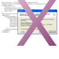
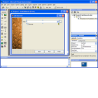
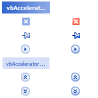
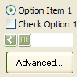

High Resolution Multimedia Timer
High Resolution Multimedia Timer
 Subclassing and Hooking with Machine Code Thunks
Subclassing and Hooking with Machine Code Thunks

XP Visual Styles Index
|  | Preventing Crashes at ShutdownSome versions of ComCtl32.DLL version 6.0 cause a crash at shutdown when you enable XP Visual Styles in an application. This particularly occurs when using VB User Controls. This article provides two solutions to the problem. Last Updated: 20 June 2003 |
|  | Making VB Apply XP Visual Styles at Design and Debug TimeIf you want to use XP Visual Styles in a VB application, the fact that the controls don't draw using the new styles at design- or debug-time can be a problem, as your form looks different when once you've compiled. Luckily you can persuade both VB5 and VB6 IDEs to use XP Visual Styles too. Last Updated: 5 April 2003 |
|  | Drawing with XP Visual StylesThis sample demonstrates using the UxTheme API calls to draw the various objects provided by current Windows XP Theme. This can be a very powerful and simple technique to providing the latest UI effects in controls and applications, as demonstrated by the No Status Bar and No Progress Bar samples. Last Updated: 20 February 2003 |
|  | Adding XP Visual Styles to Your Visual Basic ApplicationWhen you run a Visual Basic application on an XP machine, you will see that although the form gets an XP-style title bar, the controls on the form still draw in the old-fashioned Windows style. However, it doesn't take much to persuade an application to use the new styles. In some cases, you can get existing applications to use the new styles with no additional code whatsover!Last Updated: 26 January 2003 |